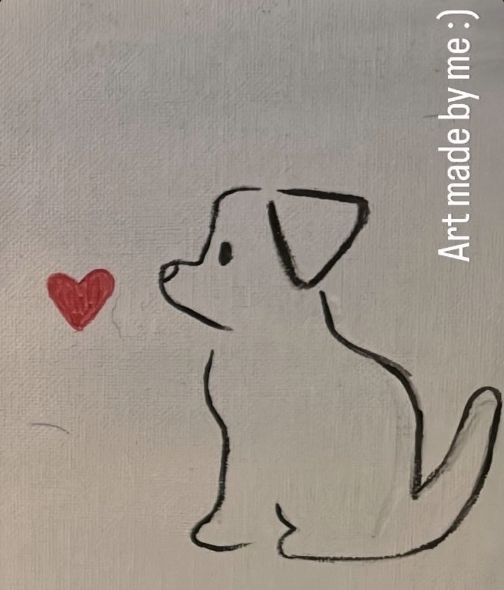
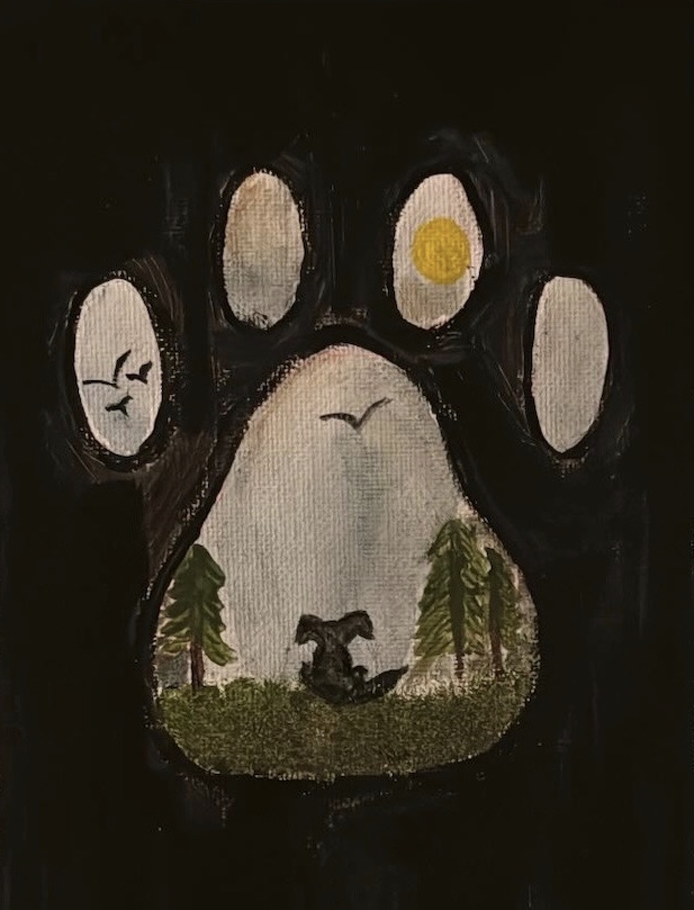
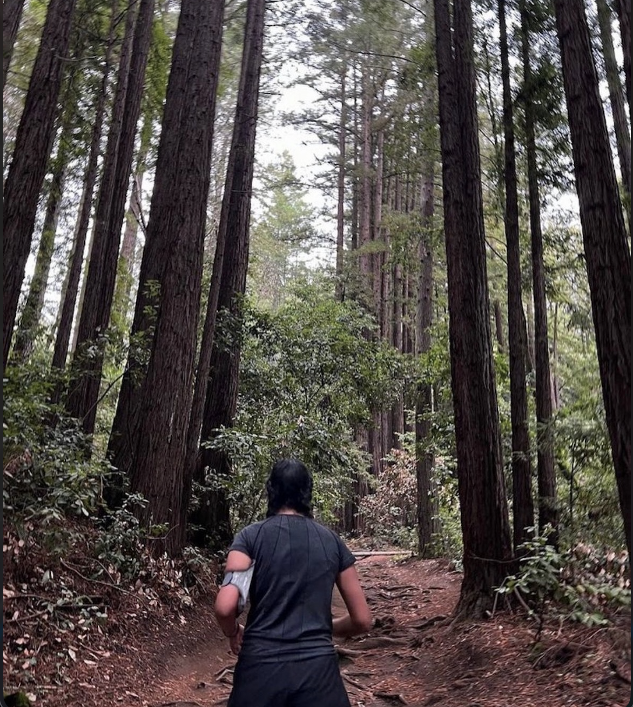

A little about me
Growing up in Silicon Valley, I watched innovation unfold around me and it sparked a curiosity I've never been able to shake. Today, I work as an Associate Software Engineer at L3Harris Technologies, where I build software at the intersection of defense and technology. I'm drawn to problems that are hard, work that matters, and the space where engineering meets real-world impact.
Education
Johns Hopkins University
Masters in Artificial Intelligence
Expected 2029
University of California - Santa Cruz
Bachelors in Computer Science
2021 – 2025
CompTIA Security+
CompTIA
August 2025
Introduction to AI Agents
DataCamp
2026
Organizations
SWE
Society of Women Engineers
Member & Former Event Coordinator
Member & Former Event Coordinator
RTC
Rewriting the Code
Member
Member
SFDC
Space Foundation
Space Ambassador
Space Ambassador
Skills
Languages
Frameworks
Tools
Outside of Work



Outside of work you can catch me running, hiking, painting, and reading!